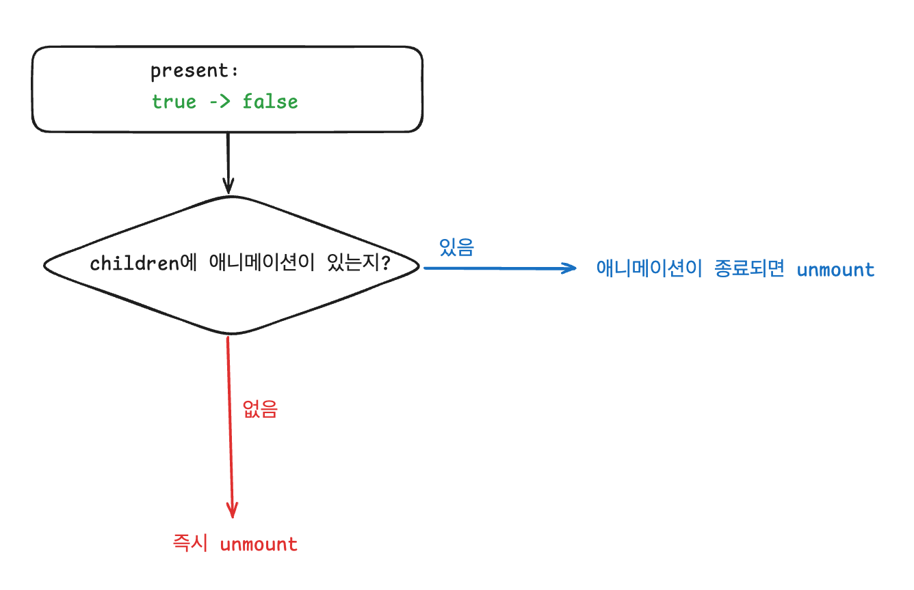
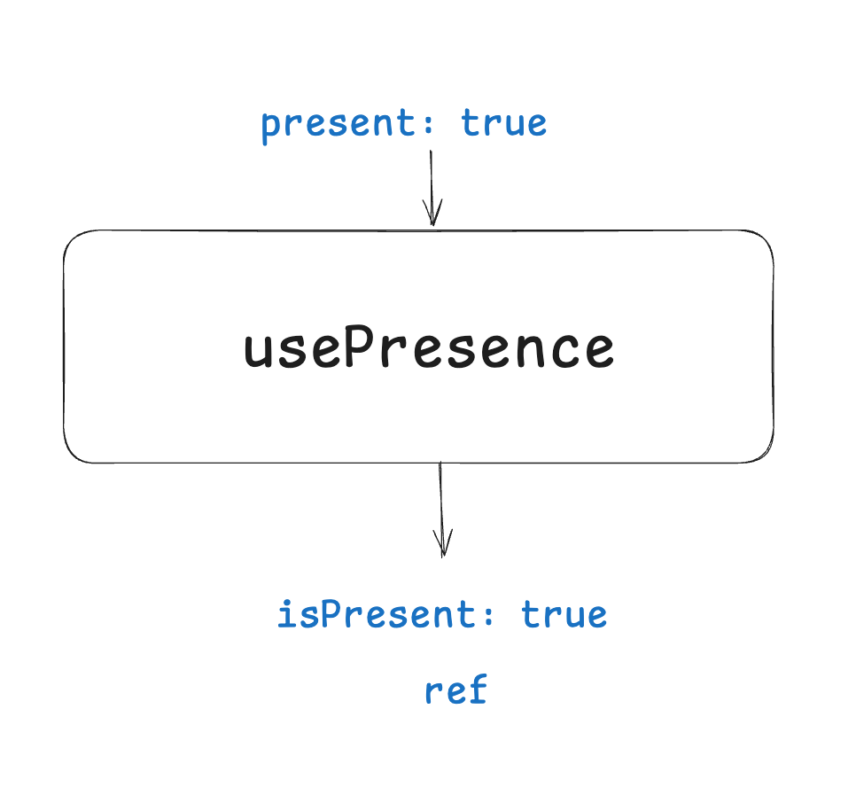
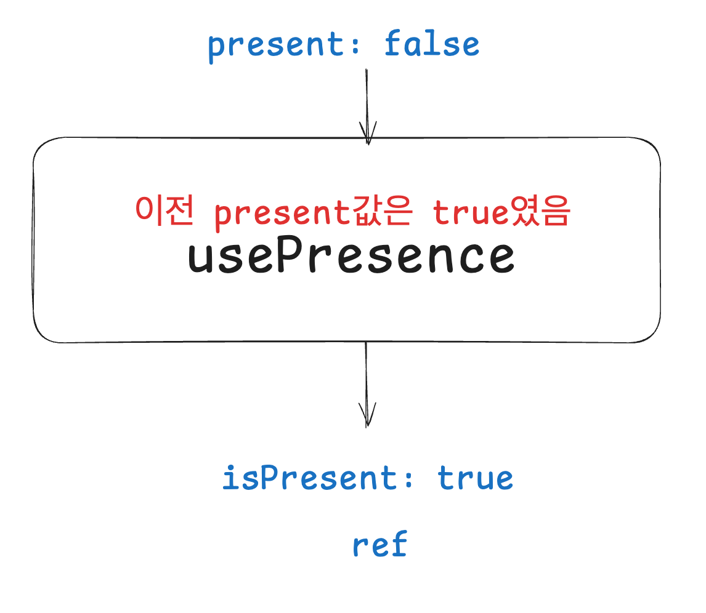
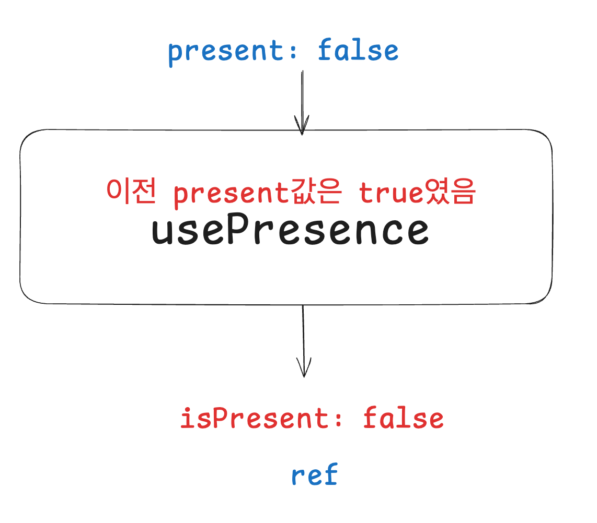
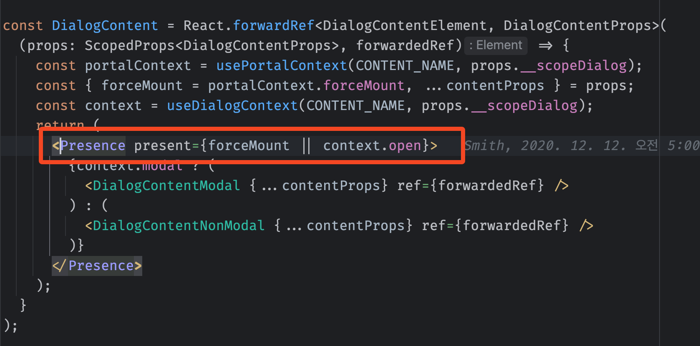
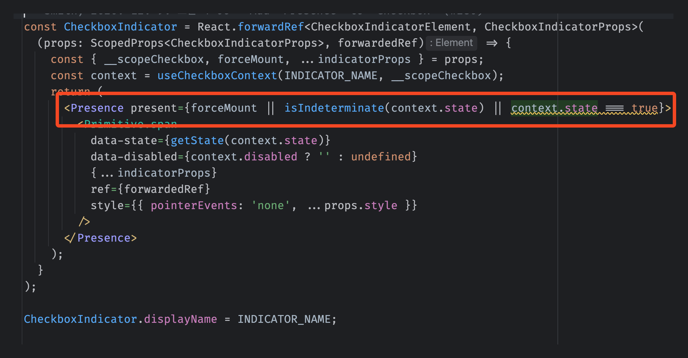

Presence
Presence
const Div = () => {
return (
<div className="div">
Div
</div>
)
}
// css
.div {
animation: fadeIn 1000ms;
}
@keyframes fadeIn {
0% { opacity: 0 }
100% { opacity: 1 }
}
unmount 시점에 애니메이션을 재생하려면
Presence는 위 기능을 제공한다.
Presence의 기능
<>
<Presence present={true}>
<Child />
</Presence>
// present 값이 children 엘리먼트의 렌더링 여부를 나타냄
<Presence present={false}>
<Child />
</Presence>
</>
const Presence = ({ present, ...props }) => {
return (
present ? props.children : null;
)
}
Presence의 기능

<>
<Presence present={true}>
<Component />
</Presence>
</>
Component가 렌더링된다.<>
<Presence present={false}>
<Component />
</Presence>
</>
unmount시점에 애니메이션 재생하는 방법
<>
<Presence present={open}>
<div data-state={open ? "open" : "closed"}>
DIV
</div>
</Presence>
</>
// css
div[data-state="closed"] {
animation: fadeOut 1000ms;
}
내부 구현
children 렌더링 결정하는 상태
const Presence = ({ present, children }) => {
const {
isPresent,
ref,
} = usePresence(present);
return isPresent
? React.cloneElement(children, { ref })
: null;
}
usePresence

usePresence
!
usePresence

애니메이션은 어떻게 감지?
const Presence = ({ present, children }) => {
const {
isPresent,
ref,
} = usePresence(present);
return isPresent
? React.cloneElement(children, { ref })
: null;
}
주의사항
const Component = forwardRef((props, ref) => {
return (
<div ref={ref}>...</div>
)
})

